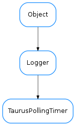

TaurusPollingTimer¶

-
class
TaurusPollingTimer(period, parent=None)[source]¶ Bases:
taurus.core.util.log.LoggerPolling timer manages a list of attributes that have to be polled in the same period
-
addAttribute(attribute, auto_start=True)[source]¶ Registers the attribute in this polling.
Parameters: - attribute (:class:~`taurus.core.taurusattribute.TaurusAttribute`) – the attribute to be added
- auto_start (:class:~`bool`) – if True (default) it tells the polling timer that it should startup as soon as there is at least one attribute registered.
-
containsAttribute(attribute)[source]¶ Determines if the polling timer already contains this attribute
Parameters: attribute (:class:~`taurus.core.taurusattribute.TaurusAttribute`) – the attribute Return type: :class:~`bool` Returns: True if the attribute is registered for polling or False otherwise
-
getAttributeCount()[source]¶ Returns the number of attributes registered for polling
Return type: :class:~`int` Returns: the number of attributes registered for polling
-
removeAttribute(attribute)[source]¶ Unregisters the attribute from this polling. If the number of registered attributes decreses to 0 the polling is stopped automatically in order to save resources.
Parameters: attribute (:class:~`taurus.core.taurusattribute.TaurusAttribute`) – the attribute to be added
-